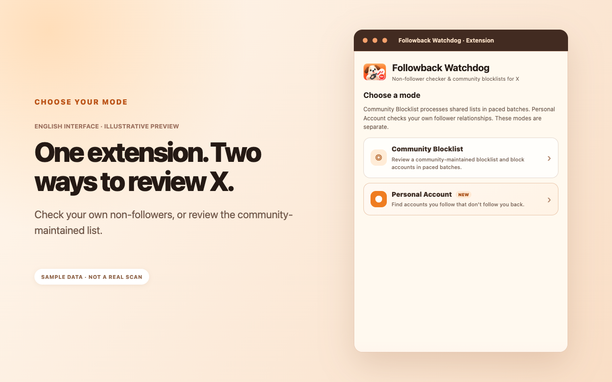

Google Chrome
Chrome Web Store
Followback Watchdog does more than check non-followers. UsePersonal Account modeto review your current follow relationships, or useCommunity Blocklist modeto browse a shared blocklist curated from X community reports.

Available for Chrome, Edge and Firefox. Store versions may lag behind the latest release while updates await review. English UI availability depends on store approval.
Chrome Web Store

Edge Add-ons
Desktop / Android
These modes serve different purposes and stay separate. Use Personal Account to check the accounts you follow, or Community Blocklist to explore a shared list before you engage.
This mode analyzesyour own account. It compares your current Following and Followers lists to identify accounts you follow that do not currently follow you back.
This modedoes not scan your private follow relationships. It presents a separate list based on public posts, follow-back discussions, voluntary submissions and manual review.
These English interface previews illustrate the six key steps. Browse left or right to see each feature. Sample account details are illustrative, not real scan results.
Personal Account showsyour own current relationships; Community Blocklist gathers public reports and user submissions in one place.
Before following back, engaging or deciding to follow someone, you can check the community list. If there's an account you would rather avoid, you canchoose to block it without having to interact with it first.
Selected releases that changed how the extension works, newest first.
Added personal follow-relationship checks alongside the existing community blocklist.
Improved batch pacing, cooldowns and handling of problematic accounts.
Introduced a shared list for users to review, verify and act on voluntarily.